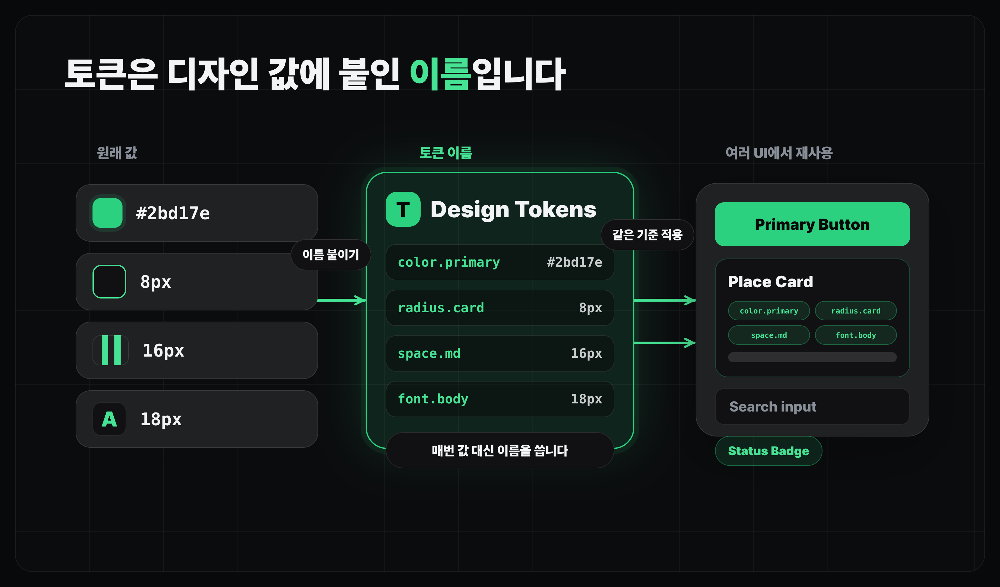

디자인 개선하기
DESIGN.md로 디자인 시스템 고정하기
DESIGN.md를 적용하여 일관성 있게 디자인을 합니다.
얻어갈 것
- 디자인 시스템이 AI 작업에서 왜 필요한지 이해합니다.
DESIGN.md로 느좋카페 서비스의 디자인 기준을 적용하고 개선합니다.
디자인 시스템이란
디자인 시스템은 화면을 반복해서 같은 기준으로 만들기 위한 약속입니다.
| 구성 | 의미 |
|---|---|
| Token(토큰) | 색, 폰트, 여백, 둥글기, 그림자처럼 반복해서 쓰는 값 |
| Component(컴포넌트) | Button, Card, Input, Dialog처럼 재사용하는 UI 조각 |
| Guideline(가이드라인) | 어떤 상황에서 어떤 표현을 쓰고 피할지 정한 규칙 |
AI에게 화면을 하나씩 맡기면 매번 색, 여백, 버튼 모양이 조금씩 달라지기 쉽습니다. 디자인 시스템은 마음에 든 시안의 기준을 다음 작업에서도 반복하게 만드는 장치입니다.

DESIGN.md는 무엇인가요
DESIGN.md는 코딩 에이전트가 읽는 자연어 디자인 시스템 문서입니다.
- Google Labs Code에서 공개한 디자인 가이드 문서 형식입니다:
google-labs-code/DESIGN.md - 색, 폰트, 여백, 카드, 버튼, 금지 표현을 한곳에 적습니다.
- Claude Code 같은 에이전트가 UI 작업 전에 읽고 같은 기준을 따르게 할 수 있습니다.
DESIGN.md 구성
DESIGN.md의 기준 포맷은 아래와 같습니다.
| 섹션 | 적을 내용 |
|---|---|
| Overview | 서비스가 어떤 화면 경험을 주려는지 |
| Design Direction | 전체 톤, 밀도, 우선순위 |
| Color System | 주요 색과 쓰지 말아야 할 색 |
| Typography | 제목, 본문, 라벨의 크기와 무게 |
| Layout | 페이지 구조, 패널, 카드, 반응형 기준 |
| Components | Button, Card, Input, Badge 같은 반복 UI 기준 |
| Do / Don't | 꼭 지킬 것과 피할 것 |
DESIGN.md 사용법
- DESIGN.md 얻기: Stitch로 DESIGN.md를 얻거나, 레퍼런스와 요구사항을 Claude Code에 넘겨 직접 만듭니다.
- 이미 있는
DESIGN.md사용하기: 공개된 예시를 보고, 내 서비스에 맞는 부분만 가져옵니다. CLAUDE.md에서 명시적으로 가리키기: "UI 작업 전에는DESIGN.md를 먼저 읽는다"는 규칙을 남겨둡니다.
예시를 가져오거나 직접 만들기
- 남의
DESIGN.md참고하기:VoltAgent/awesome-design-md처럼 여러 브랜드 스타일의DESIGN.md예시를 모아둔 저장소를 볼 수 있습니다. - 한국 서비스 감각 참고하기: oh-my-design처럼 Toss, Kakao, Baemin, Musinsa 같은 한국 서비스 레퍼런스를 포함한 도구도 있습니다.
- 직접 만들기: Stitch에서 여러 시안을 뽑고, 마음에 든 색감과 컴포넌트 기준을
DESIGN.md로 정리하거나 export합니다.
프로젝트에 연결하기
이 챕터의 workbench에는 느좋카페 예시 DESIGN.md가 있습니다. 다운로드해서 프로젝트 루트에 두세요.
DESIGN.md는 파일만 만들어서는 부족합니다. 코딩 에이전트가 UI 작업 전에 이 파일을 읽도록 프로젝트 규칙에 연결해야 합니다.
P1DESIGN.md 연결 규칙 남기기
CLAUDE.md에 디자인 작업 규칙을 추가해줘. - UI나 CSS를 수정하기 전에는 DESIGN.md를 먼저 읽는다. - DESIGN.md의 색, 여백, 컴포넌트, 말투 기준을 우선한다. - 기준과 충돌하는 변경이 필요하면 먼저 이유를 설명한다.
P2DESIGN.md 기준으로 개선 계획 세우기
DESIGN.md 기준으로 현재 화면의 디자인 개선 계획을 세워줘. - 바로 구현하지 말고 먼저 바꿀 화면과 이유를 정리해줘. - 색, 여백, 카드, 버튼, 문구 톤 기준으로 봐줘. - DESIGN.md와 충돌하는 부분이 있으면 따로 표시해줘.
마무리
- 바이브 디자인은 좋은 방향을 빠르게 찾는 방법이고 디자인 시스템은 그 방향을 다음 화면에서도 반복하게 만드는 기준입니다.
DESIGN.md는 그 기준을 Claude Code가 매번 읽을 수 있는 파일로 고정합니다.